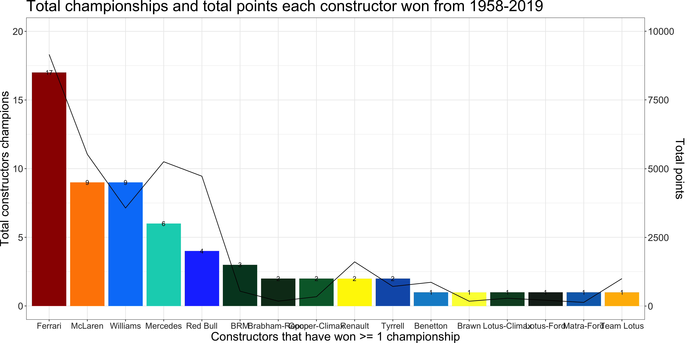

ANLY503 Final Project Dashboard
A Brief Introduction into Formula 1
Most Successful Teams in Formula 1 History

Most Successful Drivers in Formula 1 History
Formula 1 Circuits
Formula 1 Circuits
Pre-season testing
Pre-season testing
Sentiment Analysis
Sentiment Analysis
chartJSRadar
Drivers & Teams
Drivers & Teams
Number of seasons a driver stays at a team
Number of seasons a world champion stays at a team